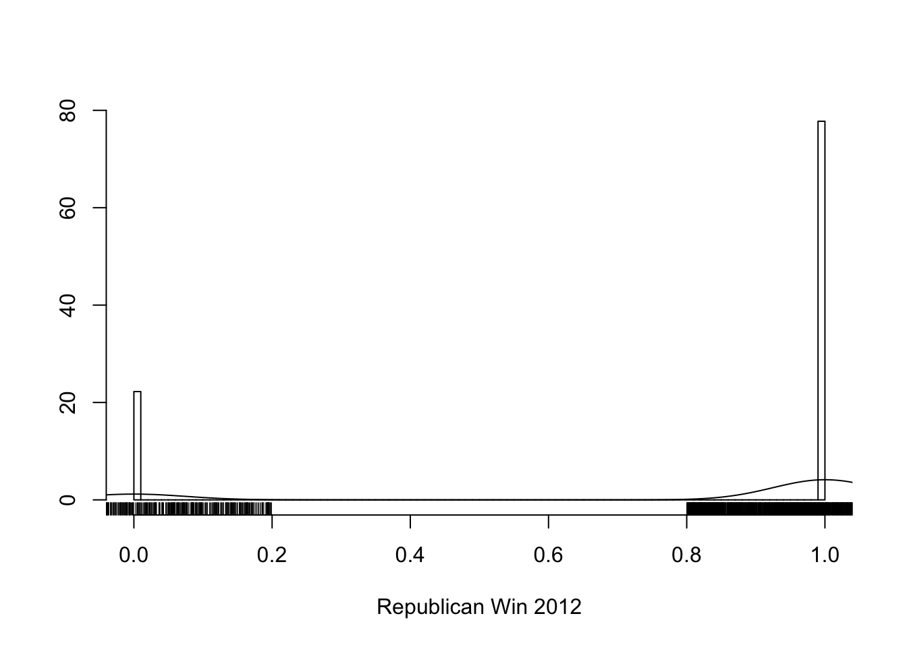
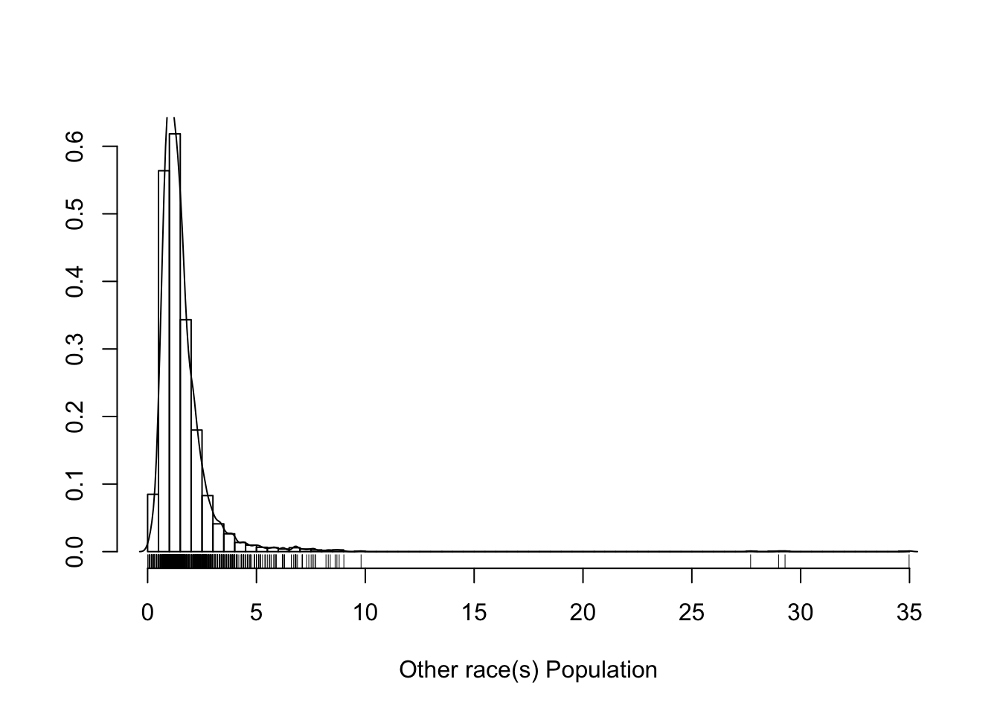

Section 1 Data Quality Report (DQR)
1.1 Overview
As mentioned, the data set we are using in this study consists of demographic, socioeconomic and geographic data by county. This data set is taken mainly from a source compiled by Emil O. W. Kirkegaard for usage in his socioeconomic research (Kirkegaard 2016). For general purpose, Emil has kindly tidied up his original data set and included the scraped election data of the year 2016, 2012, and 2008 from the New York Times as well as weather data by county, which is really tedious to collect, from the National Oceanic and Atmospheric Administration. Due to its extensive coverage of many demographic indicators, we decide to take this as our starting point from which we will add on more relevant data in order to obtain our Analytic Base Table (ABT).
The number of counties we have complete election data (N = 3148) will limit the size of instances (counties) we have in the data set. The original data set contains a total of 161 features, many of which are derived features that serve the author’s research paper and many of them are irrelevant to our study goal. As such, prior to assessing and analyzing the quality of our data, we will need to pre-process the original data set, meaning removing irrelevant features and adding as well as deriving necessary features. In the usual CRISP-DM cycle, this process would fall into Business Understanding phase where we decide the shape of the data set but as explained earlier in the introduction, we will not designate a separate document for the Business Understanding phase. As such, we will integrate our data sources and pre-process procedures into our DQR.
1.2 Data Source
See Appendix B for more information on the directory tree.
The raw data files are originally placed in data/raw/ from which we just take the relevant data and convert them into CSV format. However, as we found out, the actual data source for the election data used by the New York Times is from Associated Press (AP), whose term of use prohibits distribution of this data set. As such, we must stress that we do not intend to redistribute nor to commercialize the data set but merely use it for research purpose only. However, since this is a data-mining project, we have to show steps we took to transform the data at each stage, it is then unavoidable that we have the election data lurking in our project. As such, we hope we have stated our point clearly that we only use this data set for research purpose. To view the raw data sets, please refer to the links included in the source summaries. For more details, please refer the disclaimer section. Another point to note is that all data sets used have data by counties except for electoral vote data. Following is the description of different data sets used in this study:
| File | Description | Source |
|---|---|---|
| data_main | The main data source that we are using in this study, consisting of 161 features, covering many domains: election, administration, geographic, demographics, healthcare, human-development, weather, etc. Refer to meta_main.csv for more information. | Emil O. W. Kirkegaard |
| geog_10 | 2010 geographic data where we extract data on area (land) to calculate population density | Census Fact-finder |
| population_15 | 2015 population data where we extract data on total population and voting age population | Census Fact-finder |
| age_gender_15 | 2015 age and gender data where we extract sex ratio, and different age related metrics | Census Fact-finder |
| health_14 | 2014 healthcare data where we extract some health-related data and several socio-economical metrics such as unemployment and crime rate, etc. | County Health Ranking |
| health_15 | 2015 healthcare data where we extract some health-related data and several socio-economical metrics such as unemployment and crime rate, etc. | County Health Ranking |
| health_16 | 2016 healthcare data where we extract some health-related data and several socio-economical metrics such as unemployment and crime rate, etc. | County Health Ranking |
| human_dev_09-10 | 2009-2010 human development data, most of which we take in order to update the date in the data_main table | Measure of America |
| life_exp_98-10 | 1998-2010 data on life expectancy | Global Health Data Exchange |
| lectoral_votes_00 | 2000-present data on electoral votes by states | Psephos Adam Carr’s Election Archive |
As mentioned, the main data set itself is compiled from various sources. However, many of the data are not up-to-date and since our focus is to study the most recent election result, we need to update our data. As such, we trace back the sources from which the compiler of the main data set extracted data and find the most recent versions of these data sets. As for the sources used in the main data set, they are listed below.
| Dataset | Source |
|---|---|
| New York Times 2008 US Election result | view |
| New York Times 2012 US Election result | view |
| New York Times 2016 US Election result | view |
| Measure of America’s county data covering 2009-2010 | view |
| Countyhealthrankings.org’s health data for 2014 | view |
| Factfinder’s geographic dataset for counties for 2010 | view |
| Factfinder’s age and gender dataset for counties for 2010 | view |
| NOAA 1980-2010 normals (climate data). Average annual and seasonal data for the last 30 years | view |
Also, there are some point in the approach of the original compiler that we do not quite agree with, for instance with the 2009-2010 Human Development data set, the author Emil O. W. Kirkegaard took the average values of 2009 and 2010, which to us is not a good move because, for county such as District of Columbia (FIPS 11001), the 2010 data are not available, resulting in wrong figures: the median earning drops to $20,254 while it should actually be $40,510). This potentially cause outliers in our data and thus, we will, for now, just update this data to 2010 result and will proceed to our data preparation step to deal with missing values. As for now, we will proceed to tidying up the main data set.
1.3 Data Pre-Process
Most of the data are listed by county, so we will merge these data sets into the main data set using county FIPS code. Despite having an impressive set of 161 features, the main data set has many unnecessary features as well as lacks many important ones. As such, we will cover basic processes, including trimming, editing, adding and updating features to the main data set. Afterwards, we re-organize the order of the columns to improve readability and to make sure that features of the same domain/category are close to one another. We give each procedure a different code, for example, the first trimming procedure is called TR001. The purpose is to make it easier for code reference as a huge underlying bulk of this study lies in the code.
See Appendix C to view the procedure used and the corresponding code.
1.3.1 Trimming
Some of the features in the main data set are calculated directly by the author to serve his research paper, such as S factor, CFS, ACFS, etc. Also, in the precious election data which is scrapped off from the New York Times, there are many features that are irrelevant to our goal, such as the vote counts and fractions for minor parties (independent, other, constitution, etc.); in fact, we have checked through all counties to make sure that no 3rd party won any county. Therefore, these features will be trimmed off. The detail trimming steps and reason for each are documented below.
TR001
[COLUMN] green16_frac, libert16_frac, other16_frac
[REASON] we will not consider these minority parties. Gary Johnson and Jill Stein did not win a single county so third parties will not affect largely the result between Democratic and Republican party. Nonetheless, we will create a other16_frac column just in caseTR002
[COLUMN] all with suffix _frac2
[REASON] they are calculated by the author to just consider 2 major parties in the ratio, but since we want to group all other parties as one, we do not need thisTR003
[COLUMN] all with prefix votes16_ except for votes16_trumpd and votes16_clintonh
[REASON] we will sum the votes of all third parties to votes16_otherTR004
[COLUMN] name_prev, ST, County, State, votes, reporting, precincts, X, Y, X1
[REASON] they are of no use to our usage and merely left there in the dataset as tracers of the election scrapping algorithm that the author used, or they are merely duplicated of some other columnsTR005
[COLUMN] At.Least.High.School.Diploma
[REASON] not surprisingly this and Less.Than.High.School sum to 100% and so we can count this as redundantTR006
[COLUMN] nearest county, temp, precip, temp_bins, lat_bins, lon_bins, precip_bins, elevation_bins, lon, lat, elevation
[REASON] trace or temporary features of the scraping algorithm used to mine weather dataTR007
[COLUMN] all with suffix _TMAX, _TMIN, _TAVG, _PRCP, except for winter_PRCP and winter_TAVG
[REASON] we do not need all weather data, we will only keep winter data for the period of time during the election as this potentially affect the outcome of the election (e.g. due to bad weather, people cannot vote, etc.)TR008
[COLUMN] White, Black, Hispaic, Asian, Amerindian, Other, White_Asian
[REASON] duplicated to the other race features, probably used by the author for his socioeconomic factor calculationsTR009
[COLUMN] CA, S, MAR, CFS, ACFS, MeanALC, MaxALC, Mixedness
[REASON] those are columns that the author computed in his paper, there are little knowledge of how he computed them as well as how to use them but they are calculated but on the demographics informations that we already have, so we can safely discard themTR010
[ROW] Alaska County (2000) and Oglala Lakota county (46102) and all rows where the county has no name, or no county FIPS code
[REASON] Alaska does not have the county system (they have boroughs) and thus we do not have their other demographic data based on county. Oglala Lakota is the Indian reservation area and we do not have most of their demographic data as well. As we use county FIPS code to match data while merging dataset, rows without county FIPS code should be discarded. Evidently, these rows and the rows for county without names have a lot of missing data and should be discarded1.3.2 Editing
ED001
[COLUMN] winter_PRCP
[ACTION] divide by 100
[REASON] the scraping algorithm did not divide the precipitation data by 100. This can be verified by looking into the weather scraping code of the author or by going to the weather data source.ED002
[COLUMN] winter_TAVG
[ACTION] divide by 10
[REASON] the scraping algorithm did not divide the precipitation data by 10. This can be verified by looking into the weather scraping code of the author or by going to the weather data source1.3.3 Adding
We add several features that we find typically-included in study involving demographic such as: life expectancy, sex ratio, etc.
AD001
[COLUMN] other16_frac, votes16_others
[REASON] these will represent the number of vote and the vote fraction of other parties in the 2016 electionAD002
[COLUMN] elec_rep16_win, elec_rep16_win, elec_rep16_win
[REASON] this column indicates if Republican party wins the county in various election year. Essentially, we are considering converting this problem into a two-class problem as we realize that other parties did not win any countyAD003
[COLUMN] sex_ratio, age_dependency_ratio, median_age
[REASON] some useful and typically-included demographic indicator concerning age and gender (in this step, we also update the median age data)AD004
[COLUMN] life_expectancy
[REASON] usuful healthcare and standard of living indicatorAD005
[COLUMN] Total.Population, voting_age_population
[REASON] we update the total population and add in information regarding voting age population in order to calculate voting participation rateAD006
[COLUMN] voting_power
[REASON] each state owns different number of electoral votes which affect the result directly so it is intuitive for candicdate to focus his/her campaign and funding on certain area. This data cannot be computed from the 2016 results so we used the 2012 results insteadAD007
[COLUMN] voting_participation
[REASON] this also cannot be computed from the 2016 result but by the 2012 resultAD008
[COLUMN] population_density
[REASON] candidate might be interested in populous region to campaign1.3.4 Updating
UP001
[COLUMN] Poor.physical.health.days, Poor.mental.health.days, Low.birthweight, Teen.births, Children.in.single.parent.households, Adult.smoking, Adult.obesity, Diabetes, Sexually.transmitted.infections, HIV.prevalence.rate, Uninsured, Unemployment, Violent.crime, Homicide.rate, Injury.deaths, Infant.mortality
[ACTION] update using 2016 dataset
[REASON] update healthcare related dataUP002
[COLUMN] Median.Earnings.2010.dollars, Less.Than.High.School, At.Least.Bachelor.s.Degree, Graduate.Degree, School.Enrollment, White.not.Latino.Population, African.American.Population, Native.American.Population, Asian.American.Population, Population.some.other.race.or.races, Latino.Population, Children.Under.6.Living.in.Poverty, Adults.65.and.Older.Living.in.Poverty, Preschool.Enrollment.Ratio.enrolled.ages.3.and.4, Poverty.Rate.below.federal.poverty.threshold, Gini.Coefficient, Child.Poverty.living.in.families.below.the.poverty.line, Management.professional.and.related.occupations, Service.occupations, Sales.and.office.occupations, Farming.fishing.and.forestry.occupations, Construction.extraction.maintenance.and.repair.occupations, Production.transportation.and.material.moving.occupations
[ACTION] update using 2010 dataset
[REASON] update various human-development related data. This is essentially to undo the compilation step of the original author when he averages 2009 and 2010 dataNow that we have most of the redundant and irrelevant features trimmed off from the data as well as we have needed features added, we export our working data set to data/processed/data.csv and its metadata to data/processed/meta.csv. For the reason of potential matching of data in further steps (i.e. handling missing data and outliers in data preparation phase), we will leave the county name as well as their county FIPS code. We also leave the estimating number of vote data to identify what we consider county with unreliable results, in other words, county with the number of reported vote that is not enough to declare a winner. This dataset still contains a lot of features so we feel that the best way to present them is not necessarily list them out in a table, but try to visualize them. As such, we present the following choropleth map.
Certainly, this is not the final data set (please note that we will keep a copy of the data at each stage of the preparation process) but we can proceed with some data exploration.
See Appendix A to view the main datasets at different stages.
1.4 Data Exploration
In this section, we will explore the pre-processed data set. We will present summary of the data as well as explore the correlation between each feature. Talking about quality of the data set, we cannot go without mentioning the distribution of each feature; however, this will be covered in later sections when we go into details of each feature. As for now, we start with some general information of the data set.
| Number of instances | 3111 |
| Number of features | 79 |
| Number of continuous features | 73 |
| Number of binary features | 3 |
| Number of nominal features | 3 |
| Number of missing values | 6985 |
| Percentage of missing values | 3 |
| Maximum Entropy for a feature | 12 |
In term of the structure of the data, since we work with R, we will present structure of the data in R style.
This is a long table (79 columns), to view the rest, please use the pagination controller at the bottom-right corner
The data set consists of both continuous and nominal features and each type has different aspects to explore. As such, we present 2 separate tables for summary of each type of features. For continuous features, general statistical values are presented, including mean, median, standard deviation, min and max, as well as interquartile range, upper quartile (75%) and lower quartile (25%), percentage and number of missing values (NA). Shannon entropy is included in here as we thought it might be useful to detect extreme data, but perhaps it is more useful for nominal features.
These tables are wide, scroll right to see the rest of the summary
For categorical/nominal features, we also include statistics on the mode, highest frequency and a peek at different levels of the data. This table also summarizes binary features that we derived earlier in the pre-processing phase, at this point, we are already aware of the fact that the number of counties that Republican won in presidential elections are usually pretty high, although it seems like Democrat got hold of many populous and important counties–hence the overall in the 2008 and 2012 election. Nevertheless, as we proceed further, especially during modelling phase, we need to apply some sampling technique to balance out this distribution of class value for the winner.
Traditionally, we need to include a scatter plot matrix for all the feature and study their correlation, but we might spare that this time as we have quite a formidable number of numeric features (73), not including the FIPS codes, which will result in a giant table. To satisfy our curiosity, we actually did try to construct such a plot and apparently that was not so aesthetically pleasing. The lower triangle shows the pairwise scatter plots between every features, the upper triangle shows the corresponding Pearson correlation value and the p-value (the larger the number, the bigger the font used). Last but not least, we designated the diagonal for histogram plot of each feature. As mentioned the overall visual presentation is overwhelming but not so effective. We are especially interested in the distribution of the data and thus, we will do justice to histogram in the later section where we talk about each feature in detail.
Click here to download the high resolution version.
{kind=link}

Figure 1.1: Scatter Plot Matrix
Our second attempt at correlation plot (using the corrplot package in R) is more visually effective. Arguably, this is even better than looking at a table of correlation values between all pairs of features because when we pre-process the data set, we reordered them into categories so now it is really easy for us to spot highly correlated groups of features, which potentially provide us with some insight on how to reduce the dimension of the data set. The correlation table will be huge though (~2500 rows) so we will only take a peek at the top 100 correlation.
Fear not the minuscule! Hover on the the plot to zoom
Figure 1.2: Correlation Plot Matrix
From the correlation matrix plot, we can identify a few groups that are highly correlated. First, at the top-left, we can see that election results between the year and even between parties are highly correlated. This might seems bizarre at first, but that actually makes a lot of sense. First, 2008 and 2012 results are very similar as Barrack Obama (Democratic party) won both round. Of course, the vote fraction features are not highly correlated to the vote count, but they are highly correlated to one another. The situation seems even more absurd when we have vote count for Donald Trump and Hillary closely related! All of this happens because of the fact that the votes distribution are always very close to the 50:50 line at each county, even if one party leads, it only leads by 60%-40% typically. As such, it comes at no surprise to us that features in this group are highly correlated. The implication of this is huge because this group contains the target that we are to select for our supervised modelling process. We will reserve that for section @(dqp).
Other highly-correlated groups are the poverty/finance group and the healthcare group. Again, it is not an astonishing result. Although these two groups are highly correlated, there are (sporadically) some of their features that are not pairwise strongly correlated. This means that we cannot just easily get rid of them. As we will see in data preparation phase, this group of feature will also be reduced but in a much different way as compared to the group (election result) mentioned previously.
1.5 Feature Detail
In this final major section of this report, we will present the detail of each feature. These details include the meta data, formula, etc. and most importantly a histogram to show the distribution of value of each feature. As we can see, most will be right-skewed. We, however, cannot determine the exact underlying function for these skewed distribution and thus cannot do anything about that. For learners that are heavily affected by this, we can discretize them to secure performance. Following this section will be section 1.6, Deleted Feature, which gives details of features that we decide to remove from the final data set (Analytic Base Table) after data preparation and feature selection phase.
FIPS State Code
Original name: statecode_prev
Variable name: fips_state
Display name: FIPS State Code
Category: administration
Unit: NA
Meaning: FIPS previous state code
Lowerbound: NA
Upperbound: NA
Remark: used for matching data between the NYT datasets
Year: 2010
Source: http://factfinder.census.gov/bkmk/table/1.0/en/DEC/10_SF1/G001/0100000US.05000.003Republican Win 2016
Original name: rep16_win
Variable name: elec_rep16_win
Display name: Republican Win 2016
Category: election
Unit: NA
Meaning: indicate whether Republican party win the county in 2016 election or not
Lowerbound: NA
Upperbound: NA
Remark:
Year: 2016
Source: http://www.nytimes.com/elections/results/presidentRepublican Win 2012
Original name: rep12_win
Variable name: elec_rep12_win
Display name: Republican Win 2012
Category: election
Unit: NA
Meaning: indicate whether Republican party win the county in 2012 election or not
Lowerbound: NA
Upperbound: NA
Remark:
Year: 2012
Source: http://www.nytimes.com/elections/2012/results/president.html
Voting Participation Rate
Original name: voting_participation
Variable name: elec_voting_participation
Display name: Voting Participation Rate
Category: election
Unit: %
Meaning: percentage of population participated in the voting
Lowerbound: 0
Upperbound: 100
Remark: cannot use 2016 results to calculate this because we are trying to predict the result
Year: 2012
Source: http://www.nytimes.com/elections/2012/results/president.html\[= \frac{\text{total number of votes in 2012}}{\text{total voting-population 2015}}\times{100} \]
Voting Power
Original name: voting_power
Variable name: elec_voting_power
Display name: Voting Power
Category: election
Unit: NA
Meaning: the power of each vote that counts towards the final vote of each state
Lowerbound: 0
Upperbound: NA
Remark:
Year: 2000-2016
Source: http://psephos.adam-carr.net/countries/u/usa/pres/2000.txt\[= \frac{\text{state electoral votes } \times \text{ total number of votes of the county}}{\text{total number of votes of the state}} \]
Population Density
Original name: population_density
Variable name: demo_population_density
Display name: Population Density
Category: demographics
Unit: per km^2
Meaning: population density
Lowerbound: 0
Upperbound: NA
Remark:
Year: 2015
Source: http://factfinder.census.gov/bkmk/table/1.0/en/DEC/10_SF1/G001/0100000US.05000.003\[= \frac{\text{total population}}{\text{total land area}} \]
Sex Ratio
Original name: sex_ratio
Variable name: demo_sex_ratio
Display name: Sex Ratio
Category: demographics
Unit: NA
Meaning: number of males per 100 females
Lowerbound: 0
Upperbound: NA
Remark:
Year: 2015
Source: https://factfinder.census.gov/faces/tableservices/jsf/pages/productview.xhtml?pid=ACS_15_5YR_S0101&prodType=table\[= \frac{\text{number of males in the population}}{\text{number of females in the population}}\times{100} \]
Age Dependency Ratio
Original name: age_dependency_ratio
Variable name: demo_age_dependency_ratio
Display name: Age Dependency Ratio
Category: demographics
Unit: %
Meaning: number of dependents, aged zero to 14 and over the age of 65, to the total population, aged 15 to 64
Lowerbound: 0
Upperbound: NA
Remark:
Year: 2015
Source: https://factfinder.census.gov/faces/tableservices/jsf/pages/productview.xhtml?pid=ACS_15_5YR_S0101&prodType=table\[= \frac{\text{number of people not in working age}}{\text{number of people in working age}}\times{100} \]
Median Age
Original name: median_age
Variable name: demo_median_age
Display name: Median Age
Category: demographics
Unit: year
Meaning: median age
Lowerbound: 0
Upperbound: NA
Remark:
Year: 2015
Source: https://factfinder.census.gov/faces/tableservices/jsf/pages/productview.xhtml?pid=ACS_15_5YR_S0101&prodType=tableWhite not Latino Population
Original name: White.not.Latino.Population
Variable name: population_white
Display name: White not Latino Population
Category: race
Unit: %
Meaning: percentage of populaton identified themselves as white not latino
Lowerbound: 0
Upperbound: 100
Remark:
Year: 2010
Source: http://www.measureofamerica.org/download-agreement/\[= \frac{\text{number of people who idenfitied themselves as white (non-latino)}}{\text{total population}}\times{100} \]
African American Population
Original name: African.American.Population
Variable name: population_african_american
Display name: African American Population
Category: race
Unit: %
Meaning: percentage of populaton identified themselves as african american
Lowerbound: 0
Upperbound: 100
Remark:
Year: 2010
Source: http://www.measureofamerica.org/download-agreement/\[= \frac{\text{number of people who idenfitied themselves as african american }}{\text{total population}}\times{100} \]

Native American Population
Original name: Native.American.Population
Variable name: population_native
Display name: Native American Population
Category: race
Unit: %
Meaning: percentage of populaton identified themselves as native american
Lowerbound: 0
Upperbound: 100
Remark:
Year: 2010
Source: http://www.measureofamerica.org/download-agreement/\[= \frac{\text{number of people who idenfitied themselves as native american }}{\text{total population}}\times{100} \]
Asian American Population
Original name: Asian.American.Population
Variable name: population_asian
Display name: Asian American Population
Category: race
Unit: %
Meaning: percentage of populaton identified themselves as asian american
Lowerbound: 0
Upperbound: 100
Remark:
Year: 2010
Source: http://www.measureofamerica.org/download-agreement/\[= \frac{\text{number of people who idenfitied themselves as asian american }}{\text{total population}}\times{100} \]
Other race(s) Population
Original name: Population.some.other.race.or.races
Variable name: population_other
Display name: Other race(s) Population
Category: race
Unit: %
Meaning: percentage of populaton identified themselves as other race
Lowerbound: 0
Upperbound: 100
Remark:
Year: 2010
Source: http://www.measureofamerica.org/download-agreement/\[= \frac{\text{number of people who idenfitied themselves as other races}}{\text{total population}}\times{100} \]

Latino Population
Original name: Latino.Population
Variable name: population_latino
Display name: Latino Population
Category: race
Unit: %
Meaning: percentage of populaton identified themselves as latino/hispanic
Lowerbound: 0
Upperbound: 100
Remark:
Year: 2010
Source: http://www.measureofamerica.org/download-agreement/\[= \frac{\text{number of people who idenfitied themselves as latino/hispanic }}{\text{total population}}\times{100} \]
Homogeneity Index
Original name: SIRE_homogeneity
Variable name: population_homnogenity_index
Display name: Homogeneity Index
Category: race
Unit: NA
Meaning: Simpson index (or 1 - Simpson diversity index)
Lowerbound: 0
Upperbound: 1
Remark:
Year: 2010
Source: Kirkegaard\[= 1 - \frac{\sum{n(n-1)}}{N(N-1)} \]
Gini Coefficient
Original name: Gini.Coefficient
Variable name: finance_gini_coef
Display name: Gini Coefficient
Category: finance
Unit: NA
Meaning: income inequality index
Lowerbound: 0
Upperbound: 1
Remark:
Year: 2010
Source: http://www.measureofamerica.org/download-agreement/\[= \text{formula depends on distribution of income} \]
Median Earning
Original name: Median.Earnings.2010.dollars
Variable name: finance_median_earning
Display name: Median Earning
Category: finance
Unit: dollars
Meaning: median earning of individuals
Lowerbound: 0
Upperbound: NA
Remark:
Year: 2010
Source: http://www.measureofamerica.org/download-agreement/
Unemployment Rate
Original name: Unemployment
Variable name: demo_unemployment
Display name: Unemployment Rate
Category: occupation
Unit: %
Meaning: percentage of population age >= 16 unemployed and/or looking for job
Lowerbound: 0
Upperbound: 100
Remark:
Year: 2016
Source: http://www.countyhealthrankings.org/rankings/data\[= \frac{\text{number of people age} \geq 16 \text{ unemployed and/or looking for job}}{\text{total population}}\times{100} \]
Service Occupations
Original name: Service.occupations
Variable name: occupation_service
Display name: Service Occupations
Category: occupation
Unit: %
Meaning: percentage of population having service occupations
Lowerbound: 0
Upperbound: 100
Remark:
Year: 2010
Source: http://www.measureofamerica.org/download-agreement/\[= \frac{\text{number of people having service occupations}}{\text{total population}}\times{100} \]
Sales and Office Occupations
Original name: Sales.and.office.occupations
Variable name: occupation_sale
Display name: Sales and Office Occupations
Category: occupation
Unit: %
Meaning: percentage of population having sales and office occupations
Lowerbound: 0
Upperbound: 100
Remark:
Year: 2010
Source: http://www.measureofamerica.org/download-agreement/\[= \frac{\text{number of people having sales and office occupations}}{\text{total population}}\times{100} \]
Farming, Fishing, and Forestry Occupations
Original name: Farming.fishing.and.forestry.occupations
Variable name: occupation_agriculture
Display name: Farming, Fishing, and Forestry Occupations
Category: occupation
Unit: %
Meaning: percentage of population having agricultural occupations
Lowerbound: 0
Upperbound: 100
Remark:
Year: 2010
Source: http://www.measureofamerica.org/download-agreement/\[= \frac{\text{number of people having agricultural occupations}}{\text{total population}}\times{100} \]
Construction, Extraction, Maintenance, and Repair Occupations
Original name: Construction.extraction.maintenance.and.repair.occupations
Variable name: occupcation_maintainance
Display name: Construction, Extraction, Maintenance, and Repair Occupations
Category: occupation
Unit: %
Meaning: percentage of population having construction, extraction, maintenance, and repair occupations
Lowerbound: 0
Upperbound: 100
Remark:
Year: 2010
Source: http://www.measureofamerica.org/download-agreement/\[= \frac{\text{number of people having construction, extraction, maintenance, and repair occupations}}{\text{total population}}\times{100} \]
Production, Transportation, and Material moving Occupations
Original name: Production.transportation.and.material.moving.occupations
Variable name: occupation_transportation
Display name: Production, Transportation, and Material moving Occupations
Category: occupation
Unit: %
Meaning: percentage of population having production, transportation, and material moving occupations
Lowerbound: 0
Upperbound: 100
Remark:
Year: 2010
Source: http://www.measureofamerica.org/download-agreement/\[= \frac{\text{number of people having production, transportation, and material moving occupations}}{\text{total population}}\times{100} \]
School Enrollment
Original name: School.Enrollment
Variable name: education_school_enrollment
Display name: School Enrollment
Category: education
Unit: %
Meaning: percentage of school enrollment
Lowerbound: 0
Upperbound: 100
Remark:
Year: 2010
Source: http://www.measureofamerica.org/download-agreement/\[= \frac{\text{number of actual students enrolled}}{\text{number of potential students enrolled}}\times{100} \]
Preschool Enrollment Ratio
Original name: Preschool.Enrollment.Ratio.enrolled.ages.3.and.4
Variable name: education_preschool_enrollment
Display name: Preschool Enrollment Ratio
Category: education
Unit: %
Meaning: percentage of preschool enrollment (between 3 and 4 years old)
Lowerbound: 0
Upperbound: 100
Remark:
Year: 2010
Source: http://www.measureofamerica.org/download-agreement/\[= \frac{\text{number of actual children (between 3 and 4 years old) enrolled in preschool}}{\text{number of potential children enrolled in preschool}}\times{100} \]
At Least Bachelor Degree
Original name: At.Least.Bachelor.s.Degree
Variable name: education_at_least_bachelor
Display name: At Least Bachelor Degree
Category: education
Unit: %
Meaning: percentage of population with at least bachelor degree
Lowerbound: 0
Upperbound: 100
Remark:
Year: 2010
Source: http://www.measureofamerica.org/download-agreement/\[= \frac{\text{number of people with at least bachelor degree}}{\text{total population}}\times{100} \]
Graduate Degree
Original name: Graduate.Degree
Variable name: education_graduate_degree
Display name: Graduate Degree
Category: education
Unit: %
Meaning: percentage of population with graduate degree
Lowerbound: 0
Upperbound: 100
Remark:
Year: 2010
Source: http://www.measureofamerica.org/download-agreement/\[= \frac{\text{number of people with at least graduate degree}}{\text{total population}}\times{100} \]
Infant Mortality
Original name: Infant.mortality
Variable name: health_infant_mortality
Display name: Infant Mortality
Category: healthcare
Unit: NA
Meaning: number of deaths of infants under 1 year old per 1,000 live births
Lowerbound: 0
Upperbound: 1000
Remark:
Year: 2016
Source: http://www.countyhealthrankings.org/rankings/data\[= \frac{\text{number of deaths of infants under 1 year old}}{\text{number of live birth}}\times{1000} \]
Injury Death Rate
Original name: Injury.deaths
Variable name: health_injury
Display name: Injury Death Rate
Category: healthcare
Unit: NA
Meaning: injury mortality rate per 100,000
Lowerbound: 0
Upperbound: 1e+05
Remark:
Year: 2016
Source: http://www.countyhealthrankings.org/rankings/data\[= \frac{\text{number of injury deaths}}{\text{total population}}\times{100000} \]
Low Birth Weight Rate
Original name: Low.birthweight
Variable name: health_low_birth_weight
Display name: Low Birth Weight Rate
Category: healthcare
Unit: %
Meaning: percentage of births with low birth weight (<2,500g)
Lowerbound: 0
Upperbound: 100
Remark:
Year: 2016
Source: http://www.countyhealthrankings.org/rankings/data\[= \frac{\text{number of births with low birth weight(< 2,500 g)}}{\text{number of births}}\times{100} \]

Children in Single Parent Households Rate
Original name: Children.in.single.parent.households
Variable name: health_children_with_single_parent
Display name: Children in Single Parent Households Rate
Category: healthcare
Unit: %
Meaning: percentage of children living in single-parent household
Lowerbound: 0
Upperbound: 100
Remark:
Year: 2016
Source: http://www.countyhealthrankings.org/rankings/data\[= \frac{\text{number of children living in single-parent household}}{\text{number of children}}\times{100} \]
Adult Obesity Rate
Original name: Adult.obesity
Variable name: health_adult_obesity
Display name: Adult Obesity Rate
Category: healthcare
Unit: %
Meaning: percentage of adults that report BMI >= 30
Lowerbound: 0
Upperbound: 100
Remark:
Year: 2016
Source: http://www.countyhealthrankings.org/rankings/data\[= \frac{\text{number of adults reported BMI} \geq 30}{\text{number of adults}}\times{100} \]
Diabetes Rate
Original name: Diabetes
Variable name: health_diabetes
Display name: Diabetes Rate
Category: healthcare
Unit: %
Meaning: percentage of adults that reported currently having diabetes
Lowerbound: 0
Upperbound: 100
Remark:
Year: 2016
Source: http://www.countyhealthrankings.org/rankings/data\[= \frac{\text{number of adults currently reported having diabetes}}{\text{number of adults}}\times{100} \]
Sexually Transmitted Infections Rate
Original name: Sexually.transmitted.infections
Variable name: health_sti
Display name: Sexually Transmitted Infections Rate
Category: healthcare
Unit: NA
Meaning: number of Chlamydia case in population per 100,000
Lowerbound: 0
Upperbound: 1e+05
Remark:
Year: 2016
Source: http://www.countyhealthrankings.org/rankings/data\[= \frac{\text{number of people with Chlamydia}}{\text{total population}}\times{100000} \]
HIV Prevalence Rate
Original name: HIV.prevalence.rate
Variable name: health_hiv
Display name: HIV Prevalence Rate
Category: healthcare
Unit: NA
Meaning: number of people living with HIV infection in a given population at a given period of time per 100,000
Lowerbound: 0
Upperbound: 1e+05
Remark:
Year: 2016
Source: http://www.countyhealthrankings.org/rankings/data\[= \frac{\text{number of people currently reported living with HIV infection}}{\text{total population}}\times{100000} \]
Uninsured Rate
Original name: Uninsured
Variable name: demo_uninsured
Display name: Uninsured Rate
Category: healthcare
Unit: %
Meaning: percentage of population under 65 without insurance
Lowerbound: 0
Upperbound: 100
Remark:
Year: 2016
Source: http://www.countyhealthrankings.org/rankings/data\[= \frac{\text{number of people under 65 without insurance}}{\text{total population}}\times{100} \]
Crime Rate
Original name: Violent.crime
Variable name: demo_violent_crime
Display name: Crime Rate
Category: crime
Unit: NA
Meaning: number of crimes reported to law enforcement agencies per 100,000 total population
Lowerbound: 0
Upperbound: 1e+05
Remark:
Year: 2016
Source: http://www.countyhealthrankings.org/rankings/data\[= \frac{\text{number of violent crimes}}{\text{total population}}\times{100000} \]
Homicide Rate
Original name: Homicide.rate
Variable name: demo_homicide
Display name: Homicide Rate
Category: crime
Unit: NA
Meaning: homicide mortality rate per 100,000 total population
Lowerbound: 0
Upperbound: 1e+05
Remark:
Year: 2016
Source: http://www.countyhealthrankings.org/rankings/data\[= \frac{\text{number of homicide crimes}}{\text{total population}}\times{100000} \]
Winter Avg. Precipitation
Original name: winter_PRCP
Variable name: weather_winter_prcp
Display name: Winter Avg. Precipitation
Category: weather
Unit: inch
Meaning: winter precipitation
Lowerbound: 0
Upperbound: NA
Remark: during the election time
Year: 1981-2010
Source: https://www.ncdc.noaa.gov/cdo-web/datatools/normalsWinter Avg. Temperature
Original name: winter_TAVG
Variable name: weather_winter_tavg
Display name: Winter Avg. Temperature
Category: weather
Unit: F
Meaning: winter average temperature
Lowerbound: -200
Upperbound: 200
Remark: during the election time
Year: 1981-2010
Source: https://www.ncdc.noaa.gov/cdo-web/datatools/normals1.6 Deleted Feature
FIPS County Code
Original name: fips
Variable name: fips_county
Display name: FIPS County Code
Category: administration
Unit: NA
Meaning: FIPS county code
Lowerbound: 0
Upperbound: 57000
Remark: FIPS is federal Information Processing Standard
Year: 2016
Source: http://www.nytimes.com/elections/results/president\[= \text{2 digits state FIPS code} + \text{(up to) 3 digits for county code} \]
County Name
Original name: name_16
Variable name: name
Display name: County Name
Category: administration
Unit: NA
Meaning: county name
Lowerbound: NA
Upperbound: NA
Remark:
Year: 2016
Source: http://www.nytimes.com/elections/results/presidentRepublican Win 2008
Original name: rep08_win
Variable name: elec_rep08_win
Display name: Republican Win 2008
Category: election
Unit: NA
Meaning: indicate whether Republican party win the county in 2008 election or not
Lowerbound: NA
Upperbound: NA
Remark:
Year: 2008
Source: http://www.nytimes.com/elections/2008/results/president/map.htmlRepublican Votes 2016
Original name: votes16_trumpd
Variable name: elec_rep16
Display name: Republican Votes 2016
Category: election
Unit: NA
Meaning: number of votes of Donald J. Trump
Lowerbound: 0
Upperbound: NA
Remark: republican party
Year: 2016
Source: http://www.nytimes.com/elections/results/presidentRepublican Votes 2012
Original name: rep12
Variable name: elec_rep12
Display name: Republican Votes 2012
Category: election
Unit: NA
Meaning: number of votes for republican party 2012
Lowerbound: 0
Upperbound: NA
Remark:
Year: 2012
Source: http://www.nytimes.com/elections/2012/results/president.htmlRepublican Votes 2008
Original name: rep08
Variable name: elec_rep08
Display name: Republican Votes 2008
Category: election
Unit: NA
Meaning: number of votes for republican party 2008
Lowerbound: 0
Upperbound: NA
Remark:
Year: 2008
Source: http://www.nytimes.com/elections/2008/results/president/map.htmlDemocratic Votes 2016
Original name: votes16_clintonh
Variable name: elec_dem16
Display name: Democratic Votes 2016
Category: election
Unit: NA
Meaning: number of votes of Hillary Clinton
Lowerbound: 0
Upperbound: NA
Remark: democratic party
Year: 2016
Source: http://www.nytimes.com/elections/results/presidentDemocratic Votes 2012
Original name: dem12
Variable name: elec_dem12
Display name: Democratic Votes 2012
Category: election
Unit: NA
Meaning: number of votes for democratic party 2012
Lowerbound: 0
Upperbound: NA
Remark:
Year: 2012
Source: http://www.nytimes.com/elections/2012/results/president.htmlDemocratic Votes 2008
Original name: dem08
Variable name: elec_dem08
Display name: Democratic Votes 2008
Category: election
Unit: NA
Meaning: number of votes for democratic party 2008
Lowerbound: 0
Upperbound: NA
Remark:
Year: 2008
Source: http://www.nytimes.com/elections/2008/results/president/map.htmlOther Parties Votes 2016
Original name: votes16_others
Variable name: elec_other16
Display name: Other Parties Votes 2016
Category: election
Unit: NA
Meaning: number of votes of other parties than Democratic and Republic 2016
Lowerbound: 0
Upperbound: NA
Remark:
Year: 2016
Source: http://www.nytimes.com/elections/results/presidentOther Votes 2012
Original name: other12
Variable name: elec_other12
Display name: Other Votes 2012
Category: election
Unit: NA
Meaning: number of votes for other party 2012
Lowerbound: 0
Upperbound: NA
Remark:
Year: 2012
Source: http://www.nytimes.com/elections/2012/results/president.htmlOther Votes 2008
Original name: other08
Variable name: elec_other08
Display name: Other Votes 2008
Category: election
Unit: NA
Meaning: number of votes for other party 2008
Lowerbound: 0
Upperbound: NA
Remark:
Year: 2008
Source: http://www.nytimes.com/elections/2008/results/president/map.htmlTotal Votes 2016
Original name: total16
Variable name: elec_total16
Display name: Total Votes 2016
Category: election
Unit: NA
Meaning: total number of votes 2016
Lowerbound: 0
Upperbound: NA
Remark:
Year: 2016
Source: http://www.nytimes.com/elections/results/presidentTotal Votes 2012
Original name: total12
Variable name: elec_total12
Display name: Total Votes 2012
Category: election
Unit: NA
Meaning: total number of votes 2012
Lowerbound: 0
Upperbound: NA
Remark:
Year: 2012
Source: http://www.nytimes.com/elections/2012/results/president.htmlTotal Votes 2008
Original name: total08
Variable name: elec_total08
Display name: Total Votes 2008
Category: election
Unit: NA
Meaning: total number of votes 2008
Lowerbound: 0
Upperbound: NA
Remark:
Year: 2008
Source: http://www.nytimes.com/elections/2008/results/president/map.htmlRepublican Vote Fraction 2016
Original name: rep16_frac
Variable name: elec_rep16_frac
Display name: Republican Vote Fraction 2016
Category: election
Unit: NA
Meaning: vote fraction of republican 2016
Lowerbound: 0
Upperbound: 1
Remark:
Year: 2010
Source: KirkegaardRepublican Vote Fraction 2012
Original name: rep12_frac
Variable name: elec_rep12_frac
Display name: Republican Vote Fraction 2012
Category: election
Unit: NA
Meaning: vote fraction of republican 2012
Lowerbound: 0
Upperbound: 1
Remark:
Year: 2010
Source: KirkegaardRepublican Vote Fraction 2008
Original name: rep08_frac
Variable name: elec_rep08_frac
Display name: Republican Vote Fraction 2008
Category: election
Unit: NA
Meaning: vote fraction of republican 2008
Lowerbound: 0
Upperbound: 1
Remark:
Year: 2010
Source: KirkegaardDemocratic Vote Fraction 2016
Original name: dem16_frac
Variable name: elec_dem16_frac
Display name: Democratic Vote Fraction 2016
Category: election
Unit: NA
Meaning: vote fraction of democratic 2016
Lowerbound: 0
Upperbound: 1
Remark:
Year: 2010
Source: KirkegaardDemocratic Vote Fraction 2012
Original name: dem12_frac
Variable name: elec_dem12_frac
Display name: Democratic Vote Fraction 2012
Category: election
Unit: NA
Meaning: vote fraction of democratic 2012
Lowerbound: 0
Upperbound: 1
Remark:
Year: 2010
Source: KirkegaardDemocratic Vote Fraction 2008
Original name: dem08_frac
Variable name: elec_dem08_frac
Display name: Democratic Vote Fraction 2008
Category: election
Unit: NA
Meaning: vote fraction of democratic 2008
Lowerbound: 0
Upperbound: 1
Remark:
Year: 2010
Source: KirkegaardOther Parties Vote Fraction 2016
Original name: other16_frac
Variable name: elec_other16_frac
Display name: Other Parties Vote Fraction 2016
Category: election
Unit: NA
Meaning: vote fraction of other parties than Democratic and Republic 2016
Lowerbound: 0
Upperbound: 1
Remark:
Year: 2016
Source: http://www.nytimes.com/elections/results/presidentOther Vote Fraction 2012
Original name: other12_frac
Variable name: elec_other12_frac
Display name: Other Vote Fraction 2012
Category: election
Unit: NA
Meaning: vote fraction of other 2012
Lowerbound: 0
Upperbound: 1
Remark:
Year: 2010
Source: KirkegaardOther Vote Fraction 2008
Original name: other08_frac
Variable name: elec_other08_frac
Display name: Other Vote Fraction 2008
Category: election
Unit: NA
Meaning: vote fraction of other 2008
Lowerbound: 0
Upperbound: 1
Remark:
Year: 2010
Source: KirkegaardEstimated No. of Remaining Votes
Original name: est_votes_remaining
Variable name: elec_est_votes_remaining
Display name: Estimated No. of Remaining Votes
Category: election
Unit: NA
Meaning: number of votes from unreported precincts in the county
Lowerbound: 0
Upperbound: NA
Remark: can be used to check which county has unreliable result
Year: 2016
Source: http://www.nytimes.com/elections/results/presidentVoting Age Population
Original name: voting_age_population
Variable name: demo_voting_age_population
Display name: Voting Age Population
Category: demographics
Unit: NA
Meaning: number of people who are eligible to vote
Lowerbound: 0
Upperbound: NA
Remark: can be used to compute voting participation rate
Year: 2015
Source: https://factfinder.census.gov/faces/tableservices/jsf/pages/productview.xhtml?pid=ACS_15_5YR_DP05&prodType=tablePopulation
Original name: Total.Population
Variable name: demo_population
Display name: Population
Category: demographics
Unit: NA
Meaning: total population
Lowerbound: 0
Upperbound: NA
Remark:
Year: 2015
Source: https://factfinder.census.gov/faces/tableservices/jsf/pages/productview.xhtml?pid=ACS_15_5YR_DP05&prodType=tableChildren Under 6 Living in Poverty
Original name: Children.Under.6.Living.in.Poverty
Variable name: poverty_children
Display name: Children Under 6 Living in Poverty
Category: finance
Unit: %
Meaning: percentage of children under 6 living in poverty
Lowerbound: 0
Upperbound: 100
Remark:
Year: 2010
Source: http://www.measureofamerica.org/download-agreement/\[= \frac{\text{number of children under 6 living in povery}}{\text{number of children under 6}}\times{100} \]
Child Poverty
Original name: Child.Poverty.living.in.families.below.the.poverty.line
Variable name: poverty_child_living_in_families
Display name: Child Poverty
Category: finance
Unit: %
Meaning: percentage of children living in families below poverty line
Lowerbound: 0
Upperbound: 100
Remark:
Year: 2010
Source: http://www.measureofamerica.org/download-agreement/\[= \frac{\text{number of children living in families below poverty line}}{\text{number of children}}\times{100} \]
Adults 65 and Older Living in Poverty
Original name: Adults.65.and.Older.Living.in.Poverty
Variable name: poverty_adult
Display name: Adults 65 and Older Living in Poverty
Category: finance
Unit: %
Meaning: percentage of adults 65 and older living in poverty
Lowerbound: 0
Upperbound: 100
Remark:
Year: 2010
Source: http://www.measureofamerica.org/download-agreement/\[= \frac{\text{number of adults 65 and older living in povery}}{\text{number of adults 65 and older}}\times{100} \]
Poverty Rate
Original name: Poverty.Rate.below.federal.poverty.threshold
Variable name: poverty_below_federal_threshold
Display name: Poverty Rate
Category: finance
Unit: %
Meaning: poverty rate below federal poverty threshold
Lowerbound: 0
Upperbound: 100
Remark:
Year: 2010
Source: http://www.measureofamerica.org/download-agreement/\[= \frac{\text{number of people with income below federal poverty threshold}}{\text{total population}}\times{100} \]
Less Than High School
Original name: Less.Than.High.School
Variable name: education_less_than_high_school
Display name: Less Than High School
Category: education
Unit: %
Meaning: percentage of population with education level less than highschool
Lowerbound: 0
Upperbound: 100
Remark:
Year: 2010
Source: http://www.measureofamerica.org/download-agreement/\[= \frac{\text{number of people with education level less than highschool}}{\text{total population}}\times{100} \]
Life Expectancy
Original name: life_expectancy
Variable name: healthcare_life_expectancy
Display name: Life Expectancy
Category: healthcare
Unit: year
Meaning: the average number of years a person born in a given country is expected to live if mortality rates at each age were to remain steady in the future
Lowerbound: 0
Upperbound: NA
Remark:
Year: 2010
Source: http://ghdx.healthdata.org/record/united-states-life-expectancy-estimates-county-1985-2010Avg. No. of Physically Unhealthy Day
Original name: Poor.physical.health.days
Variable name: health_poor_physiscal_health_days
Display name: Avg. No. of Physically Unhealthy Day
Category: healthcare
Unit: day
Meaning: average number of reported physically unhealthy days per month
Lowerbound: 0
Upperbound: NA
Remark:
Year: 2016
Source: http://www.countyhealthrankings.org/rankings/dataAvg. No. of Mentally Unhealthy Day
Original name: Poor.mental.health.days
Variable name: health_poor_mental_health_days
Display name: Avg. No. of Mentally Unhealthy Day
Category: healthcare
Unit: day
Meaning: average number of reported mentally unhealthy days per month
Lowerbound: 0
Upperbound: NA
Remark:
Year: 2016
Source: http://www.countyhealthrankings.org/rankings/dataTeen Birth Rate
Original name: Teen.births
Variable name: health_teen_birth
Display name: Teen Birth Rate
Category: healthcare
Unit: NA
Meaning: number of females ages 15-19 pregnant per 1,000
Lowerbound: 0
Upperbound: 1000
Remark:
Year: 2016
Source: http://www.countyhealthrankings.org/rankings/data\[= \frac{\text{number of female age 15-19 pregnant}}{\text{number of female age 15-19}}\times{1000} \]
Adult Smoking Rate
Original name: Adult.smoking
Variable name: health_adult_smoking
Display name: Adult Smoking Rate
Category: healthcare
Unit: %
Meaning: percentage of adults that reported currently smoking
Lowerbound: 0
Upperbound: 100
Remark:
Year: 2016
Source: http://www.countyhealthrankings.org/rankings/data\[= \frac{\text{number of adults reported currently smoking}}{\text{number of adults}}\times{100} \]
References
Kirkegaard, E. O. W. 2016. “Inequality Across Us Counties: An S Factor Analysis.” Open Quantitative Sociology and Political Science.